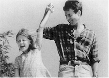
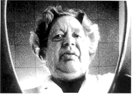

Contents | Features | Reviews | News | Archives | Store

Contents | Features | Reviews | News | Archives | Store
 |
24th Seattle
International by Lyall Bush |
June 7 6:30 Egyptian
June 12 5:00 Harvard Exit
No one had more heebie jeebies than I did watching Sam Rockwell play Davy Crockett as a dude livin' "off the grid" in Tom DiCillo's fatuous Box of Moonlight. Moviegoers will remember Rockwell's Twain-esque rascal, his cocked hips swathed in deerskin; the movie told John Turturro's story, but it was Rockwell who epitomized the pink velvet daydream that spurred Turturro's engineer to his breakdown. Hard to believe Rockwell survived the gimmickiness of either his character or the movie. I didn't show up for the press-screening of John Duigan's Lawn Dogs, anyway, expecting the kind of screen-hugging performance he turns in there. Even sharing quarters on the silver quadrangle with a 10-year-old scene-stealer, as he does pretty much throughout the film, Rockwell stays inside the moment, doesn't go pretty or cute on us, and lets the story go over, through and past him.
It's a good performance to watch. The funny thing is Rockwell's character reprises his Box of Moonlight guy. He plays a beer-drinking, flat-tummied Mr. Natural who likes to swim naked and sit out on a lawn chair in front of his trailer home in the woods. But the cuteness and the cocked hips are gone here. In Lawn Dogs there's a wariness to Rockwell that keeps your eye returning to him, and once again he's the film's core, an emblem in this case of the hinterland wilderness inside middle-class life.
That's Peter Weir country, but in a good sense. Rockwell plays Trent, the only working-class guy in a starchy gated community. He mows the lawns of the rich folks in town, and has a philosopher's feeling for what that means. "I figure that there's people who own lawns and people who take care of them," he says. "And they're never the same people." Trent keeps to himself, but there's a lot of suspicions about him, a lot of speculation. And that draws more interest.
The rumblings aren't baseless. Trent does let a slumming girl named Pam into his trailer. And he has a habit of teasing the saner half of a Leopold and Loeb pair of sociopaths, too. These encounters, though, are just warm-ups for a friendship with a 10-year-old fantasist named Devon, who intuitively dislikes her red-faced Dad and her horny Mom (she's getting it on with the other half of the Leopold and Loeb duo). Devon's already had major heart surgery and she recognizes in the lawn guy another sweet-tempered misfit.
Much of what happens to the two, and around them – they dance on the hood of his truck down by the river to Bruce Springsteen, there's a nasty confrontation with Leopold and Loeb over some missing CDs – is the stuff of Americana since Oklahoma. At its heart, Lawn Dogs is playing out some of that impulse to kill a dark-skinned (in this case just tanned) outsider who seems to be just what the doctor ordered in the way of a scapegoat. Yet the film resolutely refuses to let its story be hackneyed too. It sells its story with a sun-drenched set of photographs of life outside the gates – it's the life Trent is introducing Devon to. With Trent, Devon lets herself laugh, and she lets Trent touch her scar. And none of it has the wincing feel of exploitation. After 20 minutes, their friendship begins to seem plausible.
On the other hand, Lawn Dogs is a flawed movie – you'll find more holes in it as you turn it over in your mind's eye – but for a "small" film it seems, for a long ways into it, big, fearless about taking on all kinds of ideas about nature's penchant for favoring the unconscious over the conscious stuff, and where you'd least suspect it, too.
June 6 6:30 Egyptian
This is the near 5-hour follow-up to Lars von Trier's glittering meisterwerk, The Kingdom, a film he made for Danish television back in 1994. That film took the standard hospital drama and gave it a good, healthy shag. Von Trier sped up the "drama," or he slowed it down, depending on your eye-view, and transformed it into a murky green nightmare in which the forces of irrationality burst upon the center of the rational universe: a big old hospital in Copenhagen. In the first part, we learn that the hospital in question, nicknamed the "Kingdom," was built on a swamp; that the ghost of a little girl haunts it, having died there under dark circumstances; that the head neurosurgeon, who hates the Danes, has left the hospital at last to Haiti to study Voodoo; that a sleep disorder clinic has at least one corpse's head rolling through it. The neurosurgeon is inducted into an eccentric Mason-like club, and a woman only just pregnant gives birth to what appears to be a full-grown man. Part II is said – by a fellow I know who spent April in Denmark and heard the Danish speaking about it – to be a letdown. But that's a letdown, remember, from Moby Dick, a letdown from Gravity's Rainbow, a letdown from Citizen Kane.
Contents | Features | Reviews | News | Archives | Store
Copyright © 1999 by Nitrate Productions, Inc. All Rights Reserved.